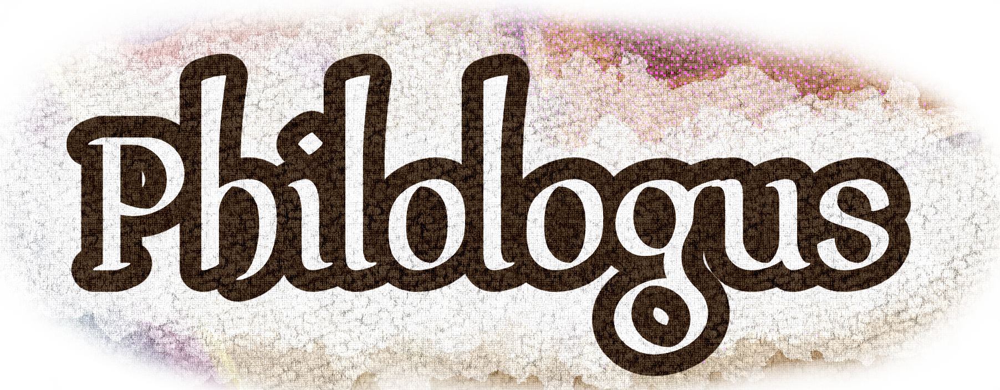
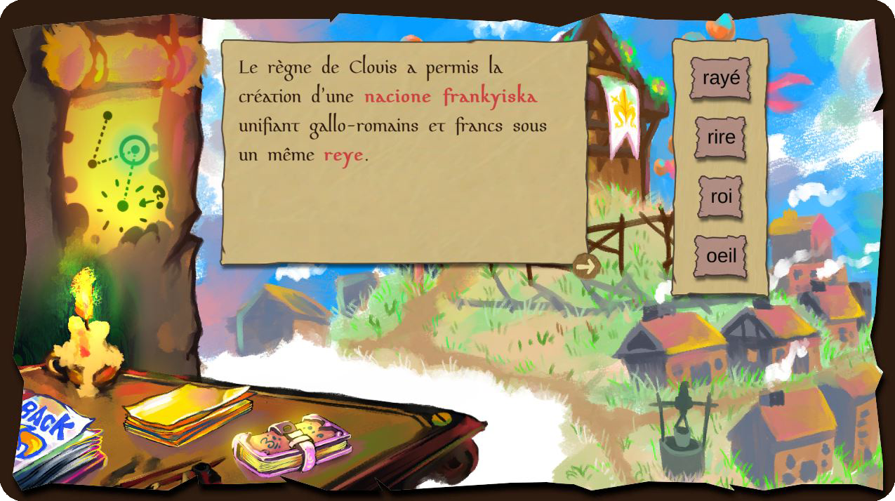

Philologus est un jeu textuel et de puzzle.
L'objectif principal est de retrouver le trésor du roi Clovis. Pour cela, le joueur doit traduire un texte en gallo-roman, et cela grâce à d'autre document où seul certains mots sont en gallo-roman. Ainsi, grâce au décor et au contexte, le joueur va devoir trouver le bon mot parmi plusieurs traduction possible Testez le jeu ici : https://marsheleene.itch.io/philologus Ce projet a été conçu dans le cadre de la Game JAM organisé par La Science Entre En Jeu
Le principe de la JAM est d'associer des créateurs du jeu vidéo (artiste, programmeur, game designer, sound designer) avec un scientifique en thèse.
Je me suis engagé dans la Game JAM en temps que Game Designer et j'ai été associé à un philologue travaillant sur l'évolution de la langue gallo-romaine.
L'objectif principal est de retrouver le trésor du roi Clovis. Pour cela, le joueur doit traduire un texte en gallo-roman, et cela grâce à d'autre document où seul certains mots sont en gallo-roman. Ainsi, grâce au décor et au contexte, le joueur va devoir trouver le bon mot parmi plusieurs traduction possible Testez le jeu ici : https://marsheleene.itch.io/philologus Ce projet a été conçu dans le cadre de la Game JAM organisé par La Science Entre En Jeu
Le principe de la JAM est d'associer des créateurs du jeu vidéo (artiste, programmeur, game designer, sound designer) avec un scientifique en thèse.
Je me suis engagé dans la Game JAM en temps que Game Designer et j'ai été associé à un philologue travaillant sur l'évolution de la langue gallo-romaine.
Ce projet a été un défi d'organisation pour moi.
J'ai fais cette JAM dans l'objectif de me challenger sur l'organisation d'un projet dans un temps de production très réduit.
Ainsi, mon travail sur ce projet à été en premier lieu de réussir à associer l'objet de la thèse avec le jeu vidéo. Mes deux autres rôles ont été la bonne organisation du projet, à savoir la cohésion entre les groupes de travail et le respect de la ligne directrice du projet, et j'ai pris le rôle de QA tester pour essayer de trouver et comprendre les bugs.
J'ai fais cette JAM dans l'objectif de me challenger sur l'organisation d'un projet dans un temps de production très réduit.
Ainsi, mon travail sur ce projet à été en premier lieu de réussir à associer l'objet de la thèse avec le jeu vidéo. Mes deux autres rôles ont été la bonne organisation du projet, à savoir la cohésion entre les groupes de travail et le respect de la ligne directrice du projet, et j'ai pris le rôle de QA tester pour essayer de trouver et comprendre les bugs.
